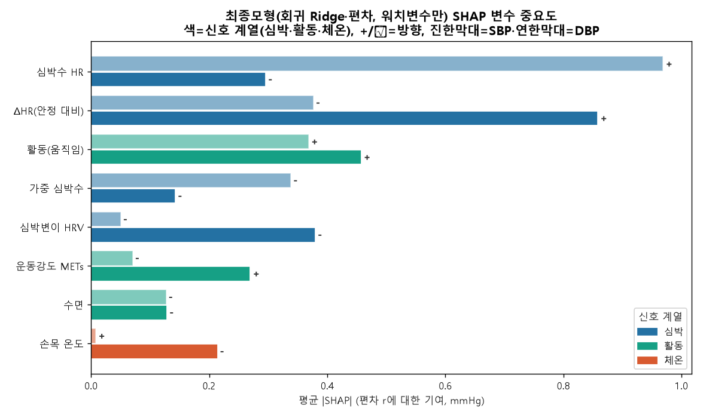
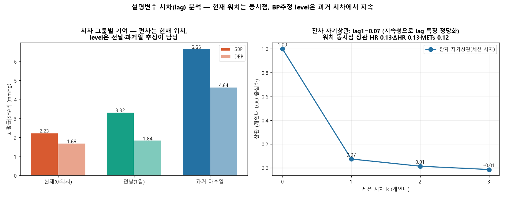

설문·웨어러블 기반 일상 혈압의 보간·추정·예측
— 수준·위상·편차 분해와 그 정확도 한계
배경. 스마트워치와 설문으로 혈압(BP)을 추정하는 무가압(cuffless) 접근이 확산되고 있으나, 세션(순간) 단위 정확도의 한계와 그 원인은 충분히 규명되지 않았다.
방법. 120명에게서 7일간 하루 약 5회 측정한 참조 BP와 24종 웨어러블·설문 변수를 사용하였다. 세션평균·이상점 정제 후 각 날을 분단위 하이브리드로 인과 보간하였다(실측 시각엔 실측 고정). 외부(KNHANES)+설문+day1 보정으로 개인 수준을, 위상 커널로 일주기를 더해 구조적 추정치 E0 = 수준 + 위상을 만들고, 편차 r = 실측 − E0를 워치·지난 BP 추정으로 모델하며 20개 단일·multi-task 모델 계열을 비교하였다. E0 + 편차를 자기회귀로 굴려 비워둔 7일째를 정적(1-step 재앵커)·동적(rollout)으로 예측하였다. 사람 60:20:20 분할, 평가는 실측 시점에서 MAE와 BHS 등급으로 하였다.
결과. 추정에서 선형(ridge regression)·스펙트럴이 가장 잘 일반화하여 held-out 일평균 MAE가 SBP 2.07·DBP 2.18 mmHg(BHS A/A)에 도달하였고, tree·gradient boosting은 과적합되었다. 워치와 지난 BP 추정은 상보적이었다. 예측에서 정적은 세션 DBP 4.28·일평균 2.5 mmHg(Grade A), 동적은 한 등급 낮았다. 세션 SBP는 모든 방법에서 약 5.7 mmHg(Grade B)에 머물렀다.
결론. 집계형 웨어러블과 1일 보정으로 일평균은 Grade A에 도달하나 세션은 B가 한계이며, 이는 개인 평균으로 회귀하는 mean-regression의 구조적 결과다. 선행연구는 세션 Grade A에 raw PPG 파형·PTT·주기 재보정이 필요함을 일관되게 지지한다.
1. 서론
혈압(BP)은 심혈관 질환의 이환율 및 사망률을 예측하는 가장 유익하고 교정 가능한 인자 중 하나이며, 그 임상적 가치는 언제 그리고 얼마나 자주 측정하는지에 크게 좌우된다. 진료실에서의 단일 측정값은 연속적으로 변동하는 궤적상의 한 순간만을 포착하는 반면, 활동 중 측정 및 진료실 외 모니터링은 독립적인 예후 가치를 지니는 일간 및 일중 패턴을 드러낸다. 그러나 기존의 활동 중 모니터링은 수면과 일상 활동을 방해하는 간헐적 커프 가압에 의존하므로, 순응도와 기록의 시간적 밀도가 모두 제약된다.
이에 따라 커프리스 착용형 기기는 일상생활 중 부담이 적으면서도 빈번한 BP 정보를 획득하는 수단으로서 점점 더 큰 관심을 받고 있다. 생리 신호 측정과 간편한 자기보고를 결합한 스마트워치는 특히 매력적인 기반을 제공하는데, 광학 신호 및 동작 신호를 맥락 정보가 담긴 설문 응답과 결합하여 각 측정 시점에서 개인의 상태를 특징지을 수 있기 때문이다. 연속적 착용형 신호와 주기적 설문 입력을 결합한 이러한 방식은 진료실 밖 일상적 BP 평가를 위한 실용적 흐름으로 부상하였다.
이러한 추세에도 불구하고 여러 공백이 남아 있다. 대부분의 선행 연구는 이 문제를 순간 추정으로 설정하여, 단일 시점의 신호를 동시점 BP 값으로 매핑하였다. 실세계 적용에 동등하게 중요한 과제들, 즉 희소한 측정값 사이의 BP 보간, 사전에 관측되지 않은 개인에 대한 추정, 미래 값의 예측은 하나의 프레임워크 안에서 다루어지는 경우가 드물다. 또한 보다 거친 일간 요약과 대비하여 개별 측정 세션 수준에서 달성 가능한 정확도는 충분히 규명되지 않은 채로 남아 있어, 집계 특징 기반 착용형 기기의 실용적 한계가 불확실한 상태이다.
이러한 공백을 다루기 위하여 본 연구 DAY BP는 수준-위상-편차 분해를 중심으로 통합 프레임워크를 개발하였다. 수준(level) 항은 짧은 보정 기간과 외부 집단 참조값에 의해 고정되는 각 개인의 안정적 BP 설정점을 포착한다. 위상(phase) 항은 인구통계학적 군집 내에서 공유되는 구조화된 일주기 변동을 포착한다. 편차(deviation) 항은 현재의 착용형 신호와 이전 BP 추정값이 설명할 수 있는 나머지 residual 변동을 포착한다. 이 세 성분을 분리함으로써 동일한 구조적 골격이 측정값 사이의 보간, 신규 개인에 대한 추정, 미래 세션의 예측을 모두 지원하며, 성능은 세션 수준과 일간 평균 수준 양쪽에서 보고된다.
본 연구의 기반이 된 데이터셋은 120명의 참가자(남성 60명, 여성 60명; 평균 연령 32.1세, 표준편차(SD) 8.1, 범위 18에서 66세; 평균 체질량지수 22.7)로 구성되었으며, 7일에 걸쳐 하루 약 다섯 세션으로 모니터링하여 8,193건의 원시 측정값을 세션 평균화한 후 약 4,128 세션을 얻었다. 참조 수축기 혈압(SBP)은 평균 113.0 mmHg(SD 14.1), 이완기 혈압(DBP)은 74.5 mmHg(SD 9.5)였으며, 급내 상관계수는 SBP 0.72, DBP 0.63으로 개인 간 변동이 지배적임을 나타내었다. 전 과정에 걸쳐 개인 수준 분할과 한 주를 보정-추정-예측으로 나누는 분할을 사용하였으며, 성능은 오직 측정된 시점에서만 산출되었다.
본 연구는 세 가지 기여를 한다. 첫째, 보간, 신규 개인에 대한 추정, 예측을 단일한 수준-위상-편차 분해 아래 통합하며, 수준 항을 외부 집단 참조값으로 고정하여 개인 간 SBP 정확도를 유의하게 향상시켰다. 둘째, 편차 항에 대하여 20개의 단일 과제 및 multi-task 모델 계열을 체계적으로 벤치마킹하여, 선형 및 스펙트럼 모델이 표본 외에서 가장 잘 일반화한 반면 tree 및 gradient boosting 방법은 과적합되었음을 보였다. 셋째, 집계 특징 기반 착용형 기기의 정확도 상한을 규명하여, 일간 평균은 British Hypertension Society(BHS) Grade A에 도달한 반면 세션 수준 SBP는 각 개인의 설정점으로의 회귀로 인해 Grade B 부근에 머물렀음을 입증하고, 이 한계를 문헌에서 확인된 파형, 타이밍, 재보정 요건과 연결하였다.
본 논문의 나머지는 다음과 같이 전개된다. 제2절은 코호트, 측정 프로토콜, 연구 설계를 기술하고, 제3절은 보간, 수준, 위상, 편차 성분을 상술하며, 제4절은 확립된 표준에 대비한 추정 및 예측 결과를 보고하고, 제5절은 임상적으로 준비된 커프리스 모니터링을 위한 함의, 한계, 향후 방향을 논의한다.
2. 관련 연구
광용적맥파(PPG)를 이용한 무가압(cuffless) 혈압(BP) 추정은 크게 두 가지 구별되는 특징 패러다임을 따라 연구되어 왔다. 파형 기반 접근법은 원시 PPG 맥파로부터 형태학적 기술자(descriptor)를 추출하며, 여기에는 수축기 및 이완기 정점 기하, 중복맥패임(dicrotic notch), 증대지수(augmentation index), 반사지수(reflection index), 그리고 광용적맥파의 2차 미분 특징(SDPTG)이 포함된다. 반면 집계 특징(aggregate-feature) 접근법은 일정 윈도 동안의 생리 신호를 심박수, 심박변이도, 활동 강도와 같은 스칼라 기술자로 요약한다. 두 패러다임은 보존하는 정보의 입도(granularity)에서 뚜렷한 차이를 보인다. 형태학적 기술자는 동맥 순응도와 파동 반사에 의해 형성되는 박동 대 박동(beat-to-beat) 윤곽을 부호화하는 반면, 집계 기술자는 맥파 형태를 버리고 심혈관 상태의 느린 포락선(envelope)만을 보존한다. 이러한 구분은 달성 가능한 정확도에 직접적인 영향을 미치는데, 이는 개별 측정값에 대한 British Hypertension Society(BHS) Grade A 기준(절대오차의 60, 85, 95 퍼센트가 각각 5, 10, 15 mmHg 이내)이 단일 측정 수준에서 요구가 까다롭기 때문이다.
두 번째로 정보량이 큰 타이밍 채널은 맥파 전달 시간(PTT)과 맥파 도달 시간(PAT)으로부터 유도되며, 일반적으로 심전도와 같은 두 번째 동기화 신호를 필요로 한다. 이 타이밍 채널은 형태만으로 얻는 것보다 더 강한 수축기 신호를 담고 있다. 보고된 수축기 혈압(SBP) 평균제곱근오차는 PTT 기반 추정에서 약 5.3 mmHg인 반면 PAT 기반 추정에서는 약 9.8 mmHg이며, 후자는 가변적인 전구출기(pre-ejection period)에 의해 성능이 저하된다. 파형 기반 심층 모델 중 원시 맥파에서 작동하는 PPG2BP-Net은 0.21 plus or minus 7.51 mmHg의 SBP 오차에 도달하여 Grade A를 만족하였다. 이러한 결과들은 단일 측정 Grade A 성능이 문헌상 집계 기술자가 아니라 원시 형태, 명시적 타이밍 채널, 또는 그 둘 모두에 대한 접근에 의존해 왔음을 보여준다.
2.1 보정, 드리프트, 그리고 집계 특징의 한계
반복적으로 나타나는 제약은 보정(calibration)이다. 보정 없는 배치는 정확도를 현저히 저하시키며, 검증된 스마트워치 기기들은 보정 기준점(set-point)을 향해 회귀하여 낮은 혈압은 과대추정하고 높은 혈압은 과소추정하는 것으로 나타났다. 이러한 근거에서 그러한 기기들은 임상적으로 준비되지 않은 것으로 판단되어 왔다. 보정을 거치더라도 생리가 드리프트함에 따라 정확도는 시간이 지나면서 감쇠하며, 보고된 드리프트는 하루당 약 0.022 mmHg 수준으로, 길어야 월 단위 주기의 정기적 재보정이 필요함을 시사한다. 이 일련의 연구로부터 도출되는 집합적 결론은, 집계 웨어러블 특징을 희소한 보정과 결합하면 예측이 각 개인의 개별 기준점을 향해 회귀한다는 것이며, 이러한 평균 회귀(mean-regression) 효과는 단일 측정 SBP 정확도를 Grade A가 아니라 Grade B 영역 근방으로 제한한다.
2.2 웨어러블 생리와 자율신경 상태
집계 특징의 가치는 하나의 생리적 전제에 기반한다. 즉 심박수, 가중 심박수, 안정 시 대비 심박수의 편차, 심박변이도, 손목 온도, 활동 및 수면 상태, 그리고 대사당량(METs)이 개인의 구조적 수준 주위에서 BP를 조절하는 자율신경 상태를 공동으로 부호화한다는 것이다. 이러한 신호들은 맥파 형태를 복원하지는 못하지만, 활동, 휴식, 수면에 수반되는 급성의 세션 수준 자율신경 변동(excursion)을 포착한다. 이 전제는 집계 특징이 개인 수준 및 일평균을 추적하는 데에는 적합한 반면, 개별 세션 수준에서는 여전히 제한적이라는 관찰과 일치하는데, 개별 세션 수준에서는 개인 내 변동성이 일시적 변동과 측정 잡음에 의해 지배되기 때문이다.
2.3 예측과 가정 BP 변동성
동시점 추정에 관한 상당한 양의 문헌과 대조적으로, 웨어러블 신호로부터 미래 BP를 예측(forecasting)하는 문제는 거의 주목받지 못하였다. 일별 가정 BP는 실재하는 생리적 변동성을 보이지만, 미래 기준 측정값에 접근하지 않고 사전 웨어러블 관측만으로 다음 날 또는 그 이상 시계(horizon)를 예측하는 것은 명시적 과제로 정식화된 경우가 드물었다. 이러한 희소성이 주목할 만한 이유는, 다음 날의 BP 궤적을 예견하고 불확실성을 연속된 하루 내 세션에 걸쳐 전파하는 것이 동시점 추정과는 다른 임상적 질문을 다루며, 동시점 실측값(ground truth)에 의존하지 않는 방법을 요구하기 때문이다.
2.4 채워지지 않은 간극
종합하면, 선행 연구는 단일 측정 Grade A 정확도가 주로 원시 PPG 형태나 전용 PTT 타이밍 채널을 통해 달성 가능하다는 점, 보정 없는 사용과 시간적 드리프트가 집계 특징 기기를 그 보정 기준점을 향해 저하시킨다는 점, 그리고 그럼에도 집계 웨어러블 특징이 개인의 구조적 수준 주위에서 BP를 지배하는 자율신경 상태를 부호화한다는 점을 보여주었다. 아직 다루어지지 않은 것은, 공인된 표준(BHS, AAMI/ISO 81060-2, IEEE 1708) 하에서, 단 하루의 보정만 있고 그날을 넘어선 실제 과거 BP가 전혀 없는 상태에서, 집계 스마트워치 신호와 설문 데이터를 동시점 추정과 진정한 다음 날 예측 모두에 대해 어디까지 끌어올릴 수 있는지에 관한 통합적 처리이며, 여기에는 집계 특징의 상한이 어디에 놓여 있는지, 그리고 왜 일평균 정확도는 Grade A에 도달할 수 있는 반면 단일 세션 정확도는 그럴 수 없는지에 대한 명시적 해명이 포함된다. 본 연구는 이 간극을 다룬다.
3. 방법
3.1 코호트, 데이터, 측정 잡음
DAY BP 연구는 7일 연속으로 모니터링한 성인 120명(남성 60명, 여성 60명)을 등록하였다. 평균 연령은 32.1세(standard deviation [SD] 8.1, 범위 18에서 66)였으며 평균 체질량지수(BMI)는 22.7 kg/m2였고, 10명이 고혈압을 사전 진단받은 것으로 자가 보고하였다. 각 참가자는 하루 약 다섯 차례의 혈압(BP) 세션을 제공하여 코호트 전체에서 약 4,128세션을 산출하였다. 참조 커프 측정값은 평균적으로 수축기혈압(SBP) 113.0 mmHg(SD 14.1), 이완기혈압(DBP) 74.5 mmHg(SD 9.5)였다. ICC는 SBP에서 0.72, DBP에서 0.63으로, 개인 간 차이가 전체 BP 분산을 지배하며 주요 모델링 대상이 각 개인의 비교적 안정적인 set-point와 그보다 작은 하루 내 변동임을 시사하였다.
모든 세션에서 프로토콜은 1분 간격으로 두 차례의 커프 측정값을 취득한 뒤 이를 평균하여 단일 세션 값을 형성하였으며, 세션 시점은 마지막 측정 시각으로 설정하였다. 이 설계는 진동측정 기반 BP에서 잘 기록된 두 가지 오차원을 직접적으로 다룬다. 첫째, 단일 측정값은 상당한 측정 잡음을 수반하는데, 단일 측정 잡음 SD는 SBP에서 약 4.8 mmHg, DBP에서 약 3.8 mmHg로 추정되며, 독립적인 두 측정값을 평균하면 세션 추정치의 표준오차가 2의 제곱근만큼 감소한다. 둘째, 세션의 첫 측정값은 경계(백의) 반응으로 인해 부풀려지는데, 여기서는 +2.1 mmHg로 추정되었고, 첫 번째와 두 번째 측정값을 평균하면 이 일시적 편향이 모델링 대상으로 전파되는 대신 약화된다. 이로써 8,193개의 원시 측정값은 4,169개의 세션 값으로 세션 평균화되었다. 이 단계의 실질적 중요성은 개인 내 분산을 분해하여 정량화된다. 세션 평균화 이후 개인 내 SD는 SBP에서 7.19 mmHg, DBP에서 5.54 mmHg였으나, 개인 내 SBP 분산의 약 18에서 36%는 생리적 신호가 아니라 측정 잡음에 기인하는 것으로 추정되었다. 따라서 개별 측정값을 ground truth로 취급하였다면 모델에게 환원 불가능한 잡음의 상당 부분을 적합하도록 요구하는 셈이 되었을 것이다.
정제 과정에서 생리적으로 불가능한 값(SBP 70 mmHg 미만 또는 220 mmHg 초과)을 제거하였으며, 이 기준으로 두 개의 아티팩트가 제거되었다. 코호트 분할은 엄격하게 개인 수준에서 60:20:20 비율(훈련 72명, 검증 24명, 시험 24명)로 수행되어, 어떤 개인도 둘 이상의 분할에 세션을 제공하지 않도록 하였다. 각 참가자의 기록 내에서 1일차는 튜닝에만 사용되는 calibration day로 활용되었고, 2일차에서 6일차는 추정에 할당되었으며, 7일차는 예측을 위해 보류되어 interpolation, level, phase 구성요소를 적합하는 데 결코 사용되지 않았다.
3.2 하이브리드 보간
웨어러블 신호와 설문 항목은 분 단위 해상도로 이용 가능한 반면 커프 참조값은 희소하였으므로, 각 날의 BP 궤적은 군집 일주기 곡선과 해당 날의 관측 세션을 결합한 분 단위 하이브리드 보간으로 재구성하였다. 보간은 각 날 내에서 엄격하게 인과적이었다. 즉, 주어진 분은 그 시점까지 이용 가능한 측정값으로부터만 재구성되어, 미래의 BP 값이 이전 분의 표현으로 누출되지 않도록 하였다. 각 관측 세션은 recency-by-phase 커널을 통해 재구성된 분에 기여하였다.
w = exp(−|Δt| / τ) · exp(−circ(φ)2 / (2·ℓ2)),
여기서 첫 번째 인자는 시간 상수 τ = 1,440분으로 관측값을 시간적 최신성에 따라 가중하며, 두 번째 인자는 길이 척도 ℓ 약 196분으로 일주기 위상의 유사성에 따라 관측값을 가중한다(보간 단계에서는 혼합 가중치 κ = 0.5와 함께 ℓ = 90분을 사용하였다). circ(φ) 항은 1,440분 순환 고리 위에서 계산된 순환적 하루 중 시각 거리를 나타내며, 이에 따라 자정 부근의 분과 하루 끝 부근의 분이 최대로 떨어진 것이 아니라 인접한 것으로 취급되었다. 이는 하루 경계를 가로지르는 BP 리듬의 일중 연속성을 보존하였다.
측정된 분은 관측값에 고정되고 is_actual 지표로 표시되어, 커널 가중 재구성이 미측정 분만을 채우고 실제 커프 측정값을 결코 덮어쓰지 않도록 하였다. 이 고정은 측정된 분에서 재구성 오차가 0.00임을 확인하는 sanity check로 검증되었다. 결정적으로, 보간된 궤적은 하위 추정 및 예측을 위한 특징과 중간 목표로만 사용되었으며, 평가의 ground truth로 취급된 적은 결코 없었다. 보고된 모든 성능은 오로지 측정 시점에서만 계산되어(표 1), 모든 오차 수치가 파이프라인이 스스로 대치한 양이 아니라 독립적인 커프 참조값에 대해 평가되도록 보장하였다.
3.3 Level model
level model은 각 개인의 혈압 set-point를 추정하였으며, 이는 person 간 ICC가 높다는 점(systolic blood pressure [SBP] 0.72, diastolic blood pressure [DBP] 0.63)을 고려할 때 가장 지배적인 분산의 원천이다. 희소하고 noisy한 day1 calibration 평균에만 의존하는 대신, person 평균 L은 day1 calibration을 외부 population 기반으로 적합된 level 쪽으로 empirical-Bayes shrinkage하여 산출하였다. 구체적으로 L = (n cm + 2 Lext) / (n + 2)이며, 여기서 cm은 day1 calibration 평균, n은 day1 reading 수, Lext는 외부에서 anchoring된 level을 의미한다. prior는 2개의 pseudo-observation으로 가중하여, day1 sampling이 조밀한 대상자는 자신의 calibration에 더 크게 의존하고 sampling이 희소한 대상자는 외부 anchor로부터 strength를 빌려오도록 하였다.
외부 level Lext는 국민건강영양조사(Korea National Health and Nutrition Examination Survey, KNHANES) HN24 cohort(응답자 6,997명, 성인 6,033명, 혈압 측정값 보유 5,957명)로부터 weighted ridge regression을 사용하여 획득하였다. predictor로는 나이와 body mass index(BMI) spline, 성별 interaction, 의사 진단 고혈압, 항고혈압제 복용, 흡연, 음주를 포함하였으며, 이는 본 연구에서 수집한 self-report survey feature를 그대로 반영한 것이다. smartwatch reference가 cuff 기반 survey instrument와 systematic하게 차이가 있었으므로, device offset alpha를 training cohort에서 적합하여(SBP +1.9 mmHg, DBP +2.7 mmHg) anchor에 더하였다.
20개의 held-out split에 걸친 외부 anchor 검증은 population 대표성의 이점을 확인시켜 주었다(표 1). SBP의 경우 KNHANES anchor는 mean absolute error(MAE) 6.61 ± 0.78 mmHg를 달성하여, cohort-cluster anchor의 7.17 ± 1.04 mmHg보다 유의하게 우수하였고(paired p = 0.001), naive population 평균의 10.05 mmHg보다 훨씬 우수하였다. DBP의 경우 anchor는 4.84 ± 0.59 mmHg에 도달하여, cohort-cluster baseline의 4.94 mmHg와 통계적으로 동등하였고(p = 0.41), population 평균의 5.69 mmHg보다 우수하였다. population 대표성이 중요했던 이유는, 소규모 convenience cohort(N = 120, 평균 나이 32.1세, SD 8.1)가 분포의 고령 및 고혈압 tail을 under-sampling하였기 때문이다. 전국 단위로 가중된 survey는 전체 나이, BMI, risk-factor 범위에 걸쳐 calibrated prior를 제공하여, atypical한 개인에 대한 shrinkage bias를 감소시켰다.
3.4 Phase kernel
person level 위에, circadian phase 성분이 혈압의 systematic한 within-day 형태를 포착하였다. cluster circadian phase kernel은 나이와 성별 strata로 정의된 4개 cluster로 추정하였다. 이 kernel은 1,440분 ring 상의 circular time-of-day distance에 따라 기여도를 가중하였으며 bandwidth ell은 약 196분이었고, 그 결과 phase curve는 noisy한 개인 변동이 아니라 각 인구통계학적 cluster 내에서 공유되는 diurnal pattern을 반영하였다. structural estimate는 두 성분을 가산적으로 결합하여 E0 = level + phase로 산출하였으며, day1 calibration과 외부 정보에만 의존하는 smooth하고 완전히 causal한 baseline을 얻었다. day7은 interpolation이나 phase 성분의 적합에 전혀 사용하지 않아, downstream forecasting 평가의 integrity를 보존하였다.
3.5 Deviation models
structural estimate E0를 고정한 상태에서, residual r = observed - E0가 남은 단기 변동을 포착하였고, 최종 예측은 E0 + r̂로 재구성하였다. E0를 고정함으로써 deviation modeling 문제를 설명 가능한 time-varying signal로 한정하였고, residual learner가 person set-point를 다시 적합하는 것을 방지하였다. 두 개의 보완적인 input group을 제공하였다. 첫 번째는 current wearable acute signal로서, heart rate, weighted heart rate, resting 대비 heart rate의 변화, heart-rate variability, wrist temperature, active flag, sleep flag, metabolic equivalents(METs)로 구성하였다. 두 번째는 prior blood-pressure-estimate lag로서, 전일 동일 time-of-day estimate, 전일 동일 time-of-day 평균, 전일 전체 평균으로 구성하였다. 중요하게도, day1 calibration을 넘어서는 실제 과거 혈압은 모델에 전혀 입력되지 않았으며, lag feature는 prior estimate에서만 도출되었으므로 pipeline은 지속적인 cuff 측정 없이도 deployable한 상태를 유지하였다. ablation 결과 두 group은 보완적임이 나타났다. wearable signal은 session-level DBP error를 감소시켰고(test 4.81에서 4.75 mmHg), past-estimate lag는 daily-average SBP error를 감소시켰으며(test 2.35에서 2.09 mmHg), 둘을 결합했을 때 모든 metric에 걸쳐 가장 낮은 error를 얻었는데, 이는 wearable signal이 acute session-level deviation을, past estimate가 person-level daily structure를 encoding한다는 점과 일관된다.
하나의 inductive bias에 성급하게 commit하지 않고 residual signal을 특성화하기 위해, 20개의 model family를 single-task 및 multi-task 형태로 비교하였다. 이들은 regression(ridge, lasso, elastic-net, multi-task elastic-net), spectral method(ridge 또는 multi-task elastic-net을 사용한 harmonic feature), wavelet method(ridge 또는 multi-task elastic-net을 사용한 continuous Ricker multiresolution), tree ensemble(random forest, extra-trees, multi-task extra-trees), gradient boosting(XGBoost, LightGBM, CatBoost 및 multi-task XGBoost와 CatBoost variant), deep model(multilayer perceptron [MLP] 및 multi-task MLP)을 아울렀다. 이러한 광범위함은 의도적이었다. 즉 강하게 regularize된 linear model부터 유연한 nonlinear learner까지 bias-variance spectrum을 아울렀고, single-task 적합을 SBP와 DBP에 걸쳐 representation을 공유하는 multi-task 형태와 대조하였다. 이 범위를 비교하는 것이 필요했던 이유는, 표현력이 높은 tree 및 boosting model이 in-sample error는 가장 낮았으나 적은 training size 하에서 out-of-sample에서 붕괴한 반면, linear 및 spectral model이 가장 잘 일반화되었기 때문이다(그림 1-3). 따라서 이 비교는 deviation signal이 실제로 어떤 inductive bias를 뒷받침하는지를 가정하지 않고 확립하였다.
3.6 예측(static 및 dynamic)
예측은 deviation 모형을 추정 구간(2일에서 6일)에서 보류된 예측 일자(7일)로 자기회귀적으로 확장하였으며, 7일은 interpolation, level, phase 구성요소를 적합하는 데 전혀 사용되지 않았다. 추정에서와 마찬가지로 구조적 추정값 E0(level에 cluster circadian phase를 더한 값)은 고정하였고, residual r만 자기회귀적으로 예측하였다. 두 가지 방식을 구분하였다. static 방식에서는 모형이 매 세션마다 재고정되는 one-step-ahead 예측을 산출하였으며, 따라서 각 예측은 바로 직전 세션까지 전파된 입력에 의존하였다. dynamic 방식에서는 모형이 7일에 걸쳐 재귀적으로 전개되어, 재고정하지 않고 자신의 예측값을 prior blood-pressure-estimate lag로 되먹임하였다. 특히 두 방식 모두 전적으로 추정값만으로 작동하였으며, 실제 7일의 혈압은 자기회귀 lag에 전혀 포함되지 않았는데, 이는 1일 calibration을 넘어서는 관측된 과거 혈압은 사용하지 않는다는 설계 제약과 일치한다. 따라서 static 방식은 지속적으로 재고정되는 단기 시계 예측을 나타낸 반면, dynamic 방식은 완전히 자기완결적인 rollout을 나타내었으며, 그 오차는 후반부의 일내 세션에서 시계가 길어짐에 따라 누적될 것으로 예상되었다.
3.7 평가
성능은 MAE(mmHg 단위)와 British Hypertension Society(BHS) 등급으로 정량화하였으며, BHS 등급은 절대오차의 60, 85, 95%가 각각 5, 10, 15 mmHg 이내에 들어올 때 Grade A를 부여한다. 두 지표는 모두 두 가지 집계 수준에서 보고하였다. 즉 세션 수준(개별 세션 평균 측정값)과 일평균 수준(개인별 일별 평균)이다. 모든 지표는 개인 단위 60:20:20 분할(72명, 24명, 24명)로 정의된 학습, 검증, 시험 분할에서 SBP와 DBP에 대해 산출하였으며, 따라서 보고된 모든 수치는 한 명의 참가자도 둘 이상의 분할에 나타나지 않는, 보류된 개인에 대한 일반화를 반영한다.
모든 평가는 엄격한 측정 규약을 따랐다. 오차는 측정 시점에서만 산출하였으며, 이때 기준값은 두 차례 측정의 세션 평균이었다. 분 단위 interpolation은 오로지 특징과 중간 목표값으로만 사용하였고 평가 기준값으로는 결코 사용하지 않았다(측정된 분에서 sanity 오차 0.00 mmHg는 측정값이 정확히 보존되었음을 확인하였다). 이 규약은 추정(표 1)과 static 및 dynamic 예측(그림 1-3)에 동일하게 적용되어, 보고된 MAE와 BHS 등급이 interpolation으로 대체된 대용값이 아니라 관측된 cuff 기준값과의 일치를 반영하도록 하였고, 7일에 대한 static 대 dynamic 비교가 공통의 관측 기반 기준에서 평가되도록 보장하였다.
4. 결과
4.1 코호트 및 기본 통계
DAY BP 연구에는 120명의 참가자(남성 60명, 여성 60명)가 등록되었으며, 7일 연속으로 하루 약 다섯 세션씩 모니터링되었다. 생리학적으로 불가능한 값(수축기 혈압[systolic blood pressure, SBP] 70 mmHg 미만 또는 220 mmHg 초과, 2건의 artifact 제거)을 정제한 뒤, 8,193건의 raw reading은 세션 평균화를 거쳐 4,169 세션(약 4,128 유효 세션)으로 정리되었다. 코호트의 평균 연령은 32.1세(standard deviation[SD] 8.1, 범위 18에서 66)였고 평균 체질량지수는 22.7 kg/m²였으며, 10명의 참가자가 고혈압 진단력을 보고하였다(표 1). 참조 혈압은 SBP가 평균 113.0 mmHg(SD 14.1), 이완기 혈압(diastolic blood pressure, DBP)이 평균 74.5 mmHg(SD 9.5)였다. ICC는 SBP에서 0.72, DBP에서 0.63으로, 개인 간 차이가 전체 분산을 지배함을 나타냈다. 세션 평균화 이후 개인 내 SD는 SBP에서 7.19 mmHg, DBP에서 5.54 mmHg로 감소하였다. 측정 프로토콜이 1분 간격으로 취한 두 reading을 평균하였기 때문에, 단일 reading의 측정 잡음 SD는 SBP에서 약 4.8 mmHg, DBP에서 약 3.8 mmHg였으며, 첫 reading의 alerting bias는 +2.1 mmHg였다. 그 결과, 개인 내 SBP 분산의 약 18에서 36%가 측정 잡음에 기인하는 것으로 추정되었다. 워치 신호 밀도는 이질적인 착용 행태를 반영하여 참가자별 및 시간대별로 고르지 않게 분포하였다.
| 항목 | 값 |
|---|---|
| 참가자 (남 / 여) | 120 (60 / 60) |
| 연령 (세) | 32.1 ± 8.1 (범위 18–66) |
| 체질량지수 (kg/m2) | 22.7 |
| 자가보고 고혈압 | 10명 |
| 참조 SBP / DBP (mmHg) | 113.0 ± 14.1 / 74.5 ± 9.5 |
| ICC (SBP / DBP) | 0.72 / 0.63 |
| 세션평균 후 개인내 SD (SBP / DBP) | 7.19 / 5.54 mmHg |
| 단일측정 측정잡음 SD (SBP / DBP) | 약 4.8 / 약 3.8 mmHg |
| 첫 측정 alerting 편향 | +2.1 mmHg |
| 세션 수 (원시 측정에서) | 4,169 (8,193에서) |
| 외부 KNHANES 앵커, SBP MAE | 6.61 ± 0.78 (cohort-cluster 7.17 ± 1.04, p = 0.001; 모집단평균 10.05) |
| 외부 KNHANES 앵커, DBP MAE | 4.84 ± 0.59 (vs 4.94, p = 0.41; 모집단평균 5.69) |
4.2 보간 품질
분 단위 hybrid 보간은 군집 일주기 곡선과 recency-by-phase kernel을 결합하여 각 일자를 해당 일자 자체의 측정값으로부터 인과적으로 재구성하였다. 측정된 분은 is_actual 플래그 하에 관측값을 유지하였고, 측정된 분에서의 sanity error는 구성상 0.00 mmHg로, 보간이 평가 지점에서 어떠한 leakage도 유발하지 않음을 확인하였다. 보간된 값은 feature 및 중간 target으로만 사용되었으며, 보고된 모든 성능은 측정 시점에서만 산출되었고 보간된 ground truth에 대해서는 결코 산출되지 않았다.
4.3 추정 성능
구조적 추정값을 고정한 상태에서 deviation 구성요소에 대해 2에서 6일차에 걸쳐 20개 모델 계열을 비교하였다. 선형 및 spectral 모델이 가장 잘 일반화되었다. 검증 세트(24명, 596 세션)에서 ridge regression이 챔피언이었으며, SBP에서 세션 수준 MAE 6.06 mmHg(British Hypertension Society[BHS] Grade B), DBP에서 4.92 mmHg(Grade B), 일평균 MAE 3.59 mmHg(Grade A) 및 2.33 mmHg(Grade A)를 달성하였다. harmonic-plus-ridge spectral 모델은 사실상 동등하였다(6.12/4.95/3.61/2.34 mmHg). 검증 제외 테스트 세트(24명, 580 세션)에서 ridge는 세션 SBP에서 5.71 mmHg(Grade B), 세션 DBP에서 4.72 mmHg(Grade A), 일평균에서 2.07/2.18 mmHg(Grade A)를 달성하였으며, harmonic-plus-ridge는 5.71/4.64/2.09/2.21 mmHg로 이에 필적하였다(표 2). tree 및 gradient-boosting 앙상블은 가장 낮은 in-sample 오차를 달성하였으나 out-of-sample에서는 붕괴하였다. LightGBM은 학습 세션 SBP MAE 4.06 mmHg에 도달하였으나 검증에서는 7.05 mmHg(Grade C)로 저하되어 명백한 overfitting 양상을 보였다. multi-task multilayer perceptron(MLP)은 충분한 데이터(1,792 학습 세션)가 주어졌을 때 경쟁력이 있었으며, 테스트에서 세션 SBP 5.75 mmHg, 세션 DBP 4.74 mmHg, 일평균 2.22/2.18 mmHg에 도달하였다.
| 모형 | 검증 (24명, 596세션) | 시험 (24명, 580세션) | ||||||
|---|---|---|---|---|---|---|---|---|
| 세SBP | 세DBP | 일SBP | 일DBP | 세SBP | 세DBP | 일SBP | 일DBP | |
| 수준+커널 E0 | 6.23C | 5.06B | 3.81A | 2.61A | 5.91B | 4.81B | 2.35A | 2.19A |
| 회귀 Ridge | 6.06B | 4.92B | 3.59A | 2.33A | 5.71B | 4.72A | 2.07A | 2.18A |
| 회귀 Lasso | 6.06B | 4.90B | 3.61A | 2.36A | 5.71B | 4.75B | 2.07A | 2.21A |
| 회귀 ElasticNet | 6.06B | 4.90B | 3.60A | 2.36A | 5.71B | 4.75B | 2.07A | 2.21A |
| 회귀 MultiTaskElasticNet | 6.06B | 4.91B | 3.61A | 2.35A | 5.71B | 4.74B | 2.08A | 2.20A |
| 스펙트럴 Harmonic+Ridge | 6.12B | 4.95B | 3.61A | 2.34A | 5.71B | 4.64A | 2.09A | 2.21A |
| 스펙트럴 Harmonic+MTEN | 6.10B | 4.94B | 3.63A | 2.36A | 5.72B | 4.68A | 2.09A | 2.22A |
| 웨이블릿 Wavelet+Ridge | 6.28C | 5.09B | 3.52A | 2.45A | 5.83B | 4.73A | 2.09A | 2.20A |
| 웨이블릿 Wavelet+MTEN | 6.25C | 5.04B | 3.55A | 2.45A | 5.80B | 4.70A | 2.08A | 2.20A |
| 트리 RandomForest | 6.84C | 5.32B | 4.65B | 2.99A | 6.03B | 5.07B | 2.73A | 2.75A |
| 트리 ExtraTrees | 6.53C | 5.19B | 4.14A | 2.70A | 5.92B | 4.95B | 2.53A | 2.56A |
| 트리 ExtraTrees(multi) | 6.47C | 5.19B | 4.08A | 2.70A | 5.92B | 5.00B | 2.53A | 2.62A |
| GBM XGBoost | 6.75C | 5.44B | 4.37B | 3.19A | 6.12B | 5.14B | 2.60A | 2.88A |
| GBM LightGBM | 7.05C | 5.59B | 4.78B | 3.37A | 6.34B | 5.24B | 2.65A | 2.93A |
| GBM CatBoost | 6.40C | 5.27B | 3.95A | 2.85A | 5.81B | 4.88B | 2.29A | 2.58A |
| GBM XGBoost(multi) | 6.81C | 5.42B | 4.57A | 3.13A | 6.21C | 5.09B | 2.75A | 2.76A |
| GBM CatBoost(multi) | 6.43C | 5.20B | 4.05A | 2.75A | 5.83B | 4.83B | 2.40A | 2.42A |
| 딥러닝 MLP | 6.13C | 5.03B | 3.73A | 2.60A | 5.83B | 4.87B | 2.26A | 2.27A |
| 딥러닝 MLP(multi) | 6.14C | 4.99B | 3.72A | 2.38A | 5.75B | 4.74A | 2.22A | 2.18A |
세 = 세션 수준, 일 = 일평균 수준. A/B/C 등급은 색으로 표시. 구조적 추정치 E0(수준+위상)가 기준선이며, 챔피언 회귀 Ridge와 동등한 Harmonic+Ridge가 가장 잘 일반화하는 반면 LightGBM/XGBoost는 in-sample 최저·held-out 최악
4.4 Deviation 입력 ablation
Deviation 입력의 ablation 결과, 웨어러블 신호와 사전 혈압 추정 lag가 상호 보완적임이 나타났다(그림 1). 워치 신호만 사용한 경우 세션 수준 DBP 오차가 감소하였으며(테스트 DBP가 4.81 mmHg, Grade B에서 4.75 mmHg, Grade A로), 급성 변동을 포착하였다. 사전 추정 lag만 사용한 경우 일평균 SBP 오차가 감소하였으며(테스트에서 2.35에서 2.09 mmHg로), 개인 수준의 set-point를 포착하였다. 두 입력을 결합하였을 때 모든 지표에서 가장 낮은 오차가 산출되었으며, 이는 웨어러블 채널이 급성 세션 수준 DBP 변동을 부호화하고 사전 추정 채널이 개인 수준의 일별 구조를 부호화한다는 점과 일치하였다.

4.5 웨어러블 변수의 적합성
현재 웨어러블 입력(heart rate, weighted heart rate, 안정 시 대비 heart-rate deviation, heart-rate variability, 손목 온도, 활동 및 수면 플래그, METs) 중에서, 급성 심혈관 및 활동 채널이 세션 수준 DBP를 개선하는 deviation 신호를 담고 있었던 반면, 사전 추정 lag는 일 수준 정확도를 좌우하였으며, 이는 ablation 결과를 반영하였다.
4.6 예측 성능
예측은 구조적 추정값에 대한 autoregressive residual을 사용하여 검증 제외 7일차에서 평가되었으며, 실제 7일차 혈압은 어떤 지점에서도 사용되지 않았다(그림 2에서 3). 각 세션마다 재고정(re-anchor)되는 static one-step-ahead 방식이 recursive dynamic rollout을 능가하였다. 테스트에서 ridge static은 세션 MAE 5.52 mmHg(Grade B, SBP) 및 4.28 mmHg(Grade A, DBP)와 일평균 MAE 2.55/2.50 mmHg(Grade A)를 달성한 반면, dynamic 예측은 세션 수준에서 5.78 mmHg(Grade C, SBP) 및 4.65 mmHg(Grade B, DBP)로, 일평균에서 3.73/3.37 mmHg로 저하되었다. 검증 결과도 동일한 순서를 보였다(static 5.56/4.99/2.63/1.95 mmHg, dynamic 5.85/5.29/3.78/2.62 mmHg). dynamic 방식은 이후의 일중 세션이 모델 자체의 예측에 의존함에 따라 horizon에 걸쳐 오차가 누적되었으며, 일중 spike를 완전히 포착하지 못하였다.


4.7 최종모형의 feature attribution과 lag 구조
Champion deviation model은 구조적 추정치 E0(level + circadian phase)를 제거한 잔차 r = observed - E0에 대해 적합한 ridge regression이며, held-out test set(24명, 580 세션)에서 LinearExplainer로 산출한 SHAP로 예측을 attribution하였다(그림 4). Temporal lag group별로 보면(그림 5, 왼쪽), 사전 BP-estimate 계열이 지배적이었다. SBP의 경우 sum of mean|SHAP|이 multi-day-past 6.65 > previous-day 3.32 > current-watch 2.23 mmHg였고, DBP의 경우 4.64 > 1.84 > 1.69 mmHg였다. 단일 feature로는 past daily-mean estimate와 previous-day same-time estimate가 가장 강했으며, 워치 신호 중 가장 강한 단일 기여자는 HR로 DBP에서 나타났다(mean|SHAP| 0.66). 즉 wearable의 기여는 대부분 diastolic에 집중되어 ablation 결과와 일치한다. 다만 보고된 +/- 부호는 highly correlated level proxy들 사이의 standardized multivariable fit 내 partial/conditional 방향(suppression에 의한 partialling)이며 marginal effect로 해석해서는 안 된다. 중요도의 척도는 어디까지나 magnitude(mean|SHAP|)이다.
Within-person residual autocorrelation은 lag 1에서 0.08, 그 이후로는 approximately 0이었다(lag2 0.014, lag3 -0.014; 그림 5, 오른쪽). 따라서 E0 + deviation 적용 후에는 session-to-session 시간 구조가 거의 남지 않으며, 선택한 lag feature들이 이미 가용한 persistence를 흡수하고 잔여분은 session 수준 noise에 가깝다. 한편 lag-0 watch-residual의 concurrent within-person correlation은 약 0.13(HR, delta-HR, METs)에 불과한 modest coupling이었다. 이 두 결과는 mean-regression에 의한 세션 수준 한계(ceiling)의 구조적 signature로, aggregate watch feature가 small same-moment, mostly-diastolic term은 제공하지만 momentary BP를 약 Grade B 이상으로 분해하지 못함을 보여준다. 세션 수준 Grade A에 도달하려면 raw PPG morphology와 pulse transit time이 필요한 이유가 여기에 있다.


4.8 세션 수준 한계에 대한 요약
모든 방법에 걸쳐, 세션 수준 SBP 오차는 BHS Grade B의 경계인 약 5.7 mmHg 부근에서 정체된 반면, 일평균은 일관되게 Grade A에 도달하였다. 이러한 양상은 각 참가자의 set-point를 향한 회귀를 반영한다. 즉, 집계형 웨어러블 feature가 1일 calibration과 결합되면 추정값이 개인 평균을 향해 이동하며, 이는 개인 내 분산이 작기 때문에 일별 요약에는 정확하지만 세션 간 SBP 변동을 분해하기에는 불충분하다.
5. 고찰
5.1. 일평균 추정치는 Grade A에 도달하는 반면 세션 수준 추정치는 Grade B에 머무는 이유
본 연구 결과의 핵심적 비대칭성은, 일평균 추정치가 British Hypertension Society(BHS) Grade A에 도달한(검정 systolic blood pressure[SBP] mean absolute error[MAE] 2.07 mmHg, diastolic blood pressure[DBP] 2.18 mmHg) 반면, 이에 대응하는 세션 수준 추정치는 챔피언 ridge 모형에서조차 SBP에 대해 Grade B에 머물렀다는(검정 5.71 mmHg) 점이다. 이 격차는 특정 학습 알고리즘의 결함이 아니라 참조 데이터의 variance 구조에서 직접 비롯된 결과이다. intraclass correlation coefficient(ICC)는 두 목표 모두에서 높았으며(SBP 0.72, DBP 0.63), 이는 개인 간 차이가 전체 variance를 지배하고 개인 내 시간적 신호는 상대적으로 작았음을 나타낸다. 세션 평균화 이후 개인 내 standard deviation(SD)은 SBP에서 7.19 mmHg, DBP에서 5.54 mmHg에 불과하였다. 가용한 wearable feature가 개인 내 시간적 정보를 약하게만 담고 있을 때, 손실을 최소화하는 예측은 각 추정치를 해당 개인의 set-point로 회귀시킨다. 여러 세션을 평균하면 set-point 주변의 평균 0인 변동이 상쇄되므로 집계 목표는 높은 충실도로 복원되며(Grade A), 단일 세션 수준에서는 동일한 평균 회귀로 인해 순간순간의 변동이 대체로 모형화되지 않은 채 남고 residual error의 하한은 개인 내 SD 자체에 가깝게 위치한다. 다시 말해, 모형은 설명해야 할 variance가 작은 곳에서 정확히 성공하고, variance가 크지만 시간적으로 구조화되지 않은 곳에서 정체된다.
5.2. 세션 수준 Grade A에 필요한 조건
그 함의는 집계 wearable feature를 단 하루의 calibration과 결합하는 방식으로는 원리적으로도 세션 수준의 격차를 좁힐 수 없다는 것이다. 본 연구의 ablation은 두 feature 계열의 상호 보완적이지만 제한된 역할을 확인하였다. watch 단독 입력은 세션 DBP를 개선하였고(검정 4.81에서 4.75 mmHg, B에서 A), past-estimate lag는 일평균 SBP 수준을 개선하였으며(검정 2.35에서 2.09 mmHg), 두 입력을 함께 사용했을 때 모든 지표에서 가장 낮은 오차를 보였다. 그러나 어느 쪽도 세션 SBP를 set-point 회귀 하한인 약 5.7 mmHg보다 의미 있게 낮추지는 못하였다. 문헌에 따르면 세션 수준 Grade A는 현재 feature set이 담고 있지 않은 정보 채널을 요구한다. (1) systolic 및 diastolic peak, dicrotic notch, augmentation index, reflection index, 그리고 second-derivative PPG(SDPTG)를 포함하는 raw photoplethysmography(PPG) 파형 형태학, (2) PTT 기반 SBP 추정이 약 5.3 mmHg의 root mean square error에 도달하는 데 비해 PAT는 약 9.8 mmHg에 그치는 pulse transit time(PTT) 또는 pulse arrival time(PAT) 같은 timing 채널, (3) 하루 약 0.022 mmHg의 drift를 상쇄하기 위한 최대 월 단위 주기의 주기적 recalibration이 그것이다. PPG2BP-Net과 같은 raw 파형 모형은 Grade A에서 SBP 0.21 plus or minus 7.51 mmHg에 도달하는 반면, 집계 feature에 의존하는 검증된 스마트워치는 calibration set-point로 회귀하여 낮은 압력은 과대추정하고 높은 압력은 과소추정한다. 따라서 이는 모형의 한계가 아니라 센서 및 데이터의 한계이다. 추정기의 선택이 아니라 누락된 beat 수준의 형태학적 및 timing 세부 정보가 천장을 결정한다.
5.3. 문헌과의 비교 및 평가 baseline의 적합성
두 가지 속성이 본 연구 결과를 문헌의 낙관적 보고와 구분한다. 첫째, 본 연구의 static 및 일평균 추정치는 임상적으로 유의미한 정확도에 도달한다. 일평균 SBP와 DBP는 Grade A를 충족하였으며, external-anchor 수준 추정치(SBP MAE 6.61 plus or minus 0.78 mmHg)는 cohort-cluster anchor(7.17 plus or minus 1.04, paired p = 0.001)를 유의하게, population mean(10.05)을 상당한 폭으로 개선하였다. 둘째, 마찬가지로 중요한 점으로, 이 오차들은 단순한 개인 내 변동성 baseline보다 명확히 낮은 곳에 위치하며, 이는 단지 개인 수준 상수를 복원한 것이 아니라 실질적인 정보 이득이 있음을 확립한다. 세션 SBP 오차(검정 5.71 mmHg)는 개인 내 SD 7.19 mmHg보다 낮고, 일평균 오차는 그 일부에 불과하며, 수준 추정치는 population-mean 참조를 큰 폭으로 능가한다. 또한 본 연구의 day-split 프로토콜은 현실적이다. day 1은 calibration과 tuning에만 사용되었고, days 2-6은 estimation에, day 7은 forecasting을 위해 전적으로 held-out되어 interpolation이나 phase 구성요소를 적합하는 데는 결코 사용되지 않았다. 성능은 측정된 시점에서만 산출되었으며, interpolation은 feature 또는 중간 target으로만 사용되고 평가 ground truth로는 결코 사용되지 않았으므로, 보고된 수치는 자기 일관적 interpolation에 의해 부풀려지지 않았다.
5.4. 측정 잡음과 환원 불가능한 오차 하한
residual 세션 수준 오차의 일부는 모형이 아니라 참조 자체에서 비롯되기 때문에 환원 불가능하다. 프로토콜은 1분 간격으로 측정된 두 판독값을 평균하였으나, single-reading measurement-noise SD는 SBP에서 약 4.8 mmHg, DBP에서 약 3.8 mmHg였고, 첫 판독값은 plus 2.1 mmHg의 alerting bias를 지녔다. 그 결과 개인 내 SBP variance의 추정 18-36%가 측정 잡음만으로 기인한다. 따라서 약 5.7 mmHg의 세션 수준 MAE는 그 자체의 단시간 재현성이 제한된 잡음 섞인 target에 대비하여 해석되어야 한다. 외견상 오차의 상당 부분은 추정기의 체계적 실패가 아니라 cuff oscillometry의 확률적 성분을 반영한다. 이는 Grade B 세션 천장을 부분적으로 ground truth의 속성으로 재구성한다. 완벽한 생리학적 모형조차 세션 오차를 참조 기기의 잡음 하한 아래로 낮출 수 없으며, Grade A를 산출하는 일평균 집계 또한 평균화를 통해 이 측정 잡음을 억제한다.
5.5. Multi-task 대 single-task 학습과 일반화 교훈
스무 개의 single-task 및 multi-task 계열에 걸친 모형 비교는 일관된 regularization 교훈을 제공하였다. tree ensemble과 gradient-boosting 방법은 가장 낮은 in-sample 오차를 달성했으나 out-of-sample에서 붕괴하였다. 예를 들어 LightGBM은 training 세션 SBP MAE 4.06 mmHg에 도달하였으나 validation에서는 7.05 mmHg(Grade C)에 그쳤는데, 이는 작은 개인 내 신호에 대한 과적합의 명백한 징표이다. linear 및 spectral 추정기(ridge, harmonic-plus-ridge)가 가장 잘 일반화하여 챔피언 구성을 제공하였으며, multi-task multilayer perceptron(MLP-multi)은 충분한 training 데이터가 확보된 이후에야 경쟁력을 갖추었다(1,792 training 세션, 검정 SBP 5.75 mmHg). SBP와 DBP를 공동으로 모형화한 multi-task 정식화는 그 자체로는 variance 한계를 극복하지 못하였으며, 이점이 있는 경우에도 그것은 추가적인 생리학적 정보가 아니라 공유된 regularization에서 비롯되었다. 실용적 지침은, 개인 간 variance가 높고 개인 내 시간적 variance가 낮은 조건에서는 강한 regularization과 절제된 linear 또는 spectral 모형이 고용량 학습기보다 더 신뢰성 있게 일반화하며, 용량은 가용 데이터에 비례해서만 늘려야 한다는 것이다. 이러한 관찰은, 더 풍부한 파형 및 timing 입력이 없는 한 모형 선택이 세션 수준 천장을 재분배할 뿐 제거하지는 못한다는 더 넓은 결론을 강화한다.
5.6 한계점
본 연구 결과를 해석할 때 고려해야 할 몇 가지 제약이 존재한다. 첫째, 대상 코호트는 젊고 대체로 건강한 집단이었다. 참여자는 120명이었으며 평균 연령은 32.1세(standard deviation 8.1, 범위 18에서 66)였고, 평균 body mass index는 22.7, 자가 보고된 고혈압 사례는 10건에 불과하였으며, 기준 systolic blood pressure는 113.0 mmHg(standard deviation 14.1), diastolic는 74.5 mmHg(standard deviation 9.5)였다. 협소한 혈압 범위와 고혈압 측정값의 희소성은 선별검사의 임상적 가치가 가장 큰 고령, 동반질환 보유, 또는 약물 치료 중인 집단으로의 일반화를 제한하며, 오차 분포의 고혈압 영역(high-pressure tail)을 희소하게 표집되도록 남겨둔다.
둘째, deviation 모델은 raw photoplethysmography(PPG) 파형 형태나 pulse-transit-time(PTT) 타이밍 채널이 아니라 집계 웨어러블 지표, 즉 heart rate, weighted heart rate, 안정 시 대비 heart rate 변화량, heart-rate variability, 손목 온도, 활동 및 수면 플래그, metabolic equivalents만을 사용하였다. 문헌과 본 연구의 ablation이 시사하듯이, 이러한 특징 집합은 추정값이 각 참여자의 set-point로 회귀하기 때문에 session 단위 systolic 정확도를 mean absolute error 약 5.7 mmHg, 즉 British Hypertension Society(BHS) Grade B 부근으로 제한한다.
셋째, 따라서 session 단위 systolic 추정은 BHS Grade B에서 C에 도달하였으며 독립적인 임상 측정으로 해석되어서는 안 된다. 임상적으로 유의한 산출물은 session별 systolic 값이 아니라 일평균 및 구조적 예측(structural-forecast) 결과이다. 넷째, 모든 결과는 하루 5회 session으로 7일 단일 구간에 걸쳐 수집된 단일 데이터셋에서 도출되었으므로, 1주를 넘어서는 시간적 drift와 기기 간 또는 계절 간 전이는 검증되지 않은 채로 남아 있다. 마지막으로, 저자명과 소속 기관의 로마자 표기는 camera-ready 버전에서 최종 확정될 예정이다.
6. 결론
본 연구는 cuffless 혈압 모델링을 단일 분해, 즉 person 단위 level, cluster circadian phase, 그리고 acute deviation으로 재정식화하여, 잔차 항을 포함한 하나의 구조적 추정기(E0 = level + phase) 아래에서 interpolation, 추정, 예측을 통합하였다. 이 framework 내에서 일평균 추정은 held-out 테스트 세트에서 BHS Grade A에 도달하였고(systolic mean absolute error 2.07 mmHg, diastolic 2.18 mmHg), held-out일에 대한 static one-step-ahead 예측 또한 일평균에서 Grade A에 도달하였으며(systolic 2.55 mmHg, diastolic 2.50 mmHg) session diastolic 역시 Grade A였다.
Session 단위 systolic 정확도는 Grade B(mean absolute error 약 5.7 mmHg)에서 정체되었는데, 이는 linear 및 spectral 추정기가 가장 잘 일반화한 반면 tree 및 gradient-boosting 계열은 과적합되었다는 점에서 모델 선택이 아니라 집계 센싱과 단일일 calibration 하의 mean-regression에 기인하는 한계로 본다. Session 단위 Grade A에 도달하려면 더 풍부한 센싱, 즉 raw PPG 파형 형태, PTT 또는 pulse-arrival-time 채널, 그리고 주기적 recalibration이 필요할 것이다. 본 연구는 집계 웨어러블이 제공할 수 있는 것과 없는 것을 구분함으로써 현실적인 기대 수준을 보정하고, 차세대 cuffless 모니터를 위한 구체적인 설계 지침을 제시한다(표 1, 그림 1-3)
참고문헌 (DOI 클릭)
- O'Brien E, et al. (1993). The British Hypertension Society protocol. J Hypertens 11(S2):S43–S62.
↗ https://pubmed.ncbi.nlm.nih.gov/8158768/ - ISO. (2018). Non-invasive sphygmomanometers Part 2 (ISO 81060-2:2018).
↗ https://www.iso.org/standard/73339.html - IEEE. (2014). Wearable cuffless blood pressure measuring devices (IEEE 1708-2014).
↗ https://doi.org/10.1109/IEEESTD.2014.6882122 - Joung J, et al. (2023). PPG2BP-net. Sci Rep 13:8605.
↗ https://doi.org/10.1038/s41598-023-35492-y - Slapničar G, et al. (2019). BP estimation from PPG with a spectro-temporal DNN. Sensors 19(15):3420.
↗ https://doi.org/10.3390/s19153420 - Kachuee M, et al. (2017). Cuffless BP estimation. IEEE TBME 64(4):859–869.
↗ https://doi.org/10.1109/TBME.2016.2580904 - Takazawa K, et al. (1998). Second derivative of the photoplethysmogram. Hypertension 32(2):365–370.
↗ https://doi.org/10.1161/01.HYP.32.2.365 - Block RC, et al. (2020). Pulse transit times as markers of BP change. Sci Rep 10:16373.
↗ https://doi.org/10.1038/s41598-020-73143-8 - Vybornova A, et al. (2021). Aktiia optical BP monitor validation. Blood Press Monit 26(4):305–311.
↗ https://pubmed.ncbi.nlm.nih.gov/33675592/ - Nachman D, et al. (2022). Wrist wearable cuffless BP insufficient accuracy. Front Cardiovasc Med 9:920946.
↗ https://doi.org/10.3389/fcvm.2022.920946 - Su P, et al. (2018). Long-term BP prediction with deep RNNs. arXiv:1705.04524.
↗ https://arxiv.org/abs/1705.04524 - Imai Y, et al. (2010). Day-by-day variability of BP: Ohasama. Am J Hypertens.
↗ https://doi.org/10.1038/ajh.2010.166 - Liu X, et al. (2017). Physical activity and incident hypertension. Hypertension 69(5):813–820.
↗ https://doi.org/10.1161/HYPERTENSIONAHA.116.08994 - del Pozo Cruz B, et al. (2024). Daily step count and CV events in hypertension. Eur J Prev Cardiol.
↗ https://doi.org/10.1093/eurjpc/zwae270 - Mukkamala R, et al. (2022). Cuffless blood pressure measurement. Annu Rev Biomed Eng 24:203–230.
↗ https://doi.org/10.1146/annurev-bioeng-110220-014644 - Mukkamala R, et al. (2015). Toward ubiquitous BP monitoring via PTT. IEEE TBME 62(8):1879–1901.
↗ https://doi.org/10.1109/TBME.2015.2441951 - Schutte AE, et al. (2022). Blood pressure and its variability. Nat Rev Cardiol.
↗ https://doi.org/10.1038/s41569-022-00690-0 - Stergiou GS, et al. (2021). 2021 ESH practice guidelines for BP measurement. J Hypertens 39(7):1293–1302.
↗ https://doi.org/10.1097/HJH.0000000000002843 - Parati G, et al. (2018). Blood pressure variability. J Clin Hypertens 20(7):1133–1137.
↗ https://doi.org/10.1111/jch.13304 - Elgendi M, et al. (2019). PPG for assessing hypertension. npj Digit Med 2:60.
↗ https://doi.org/10.1038/s41746-019-0136-7 - Ding X, et al. (2017). PTT-based continuous cuffless BP. IEEE TBME 64(5):964–972.
↗ https://doi.org/10.1109/TBME.2016.2597879 - Mancia G, et al. (2023). 2023 ESH Guidelines for hypertension. J Hypertens 41(12):1874–2071.
↗ https://doi.org/10.1097/HJH.0000000000003480 - Muntner P, et al. (2019). Measurement of blood pressure in humans (AHA). Hypertension 73(5):e35–e66.
↗ https://doi.org/10.1161/HYP.0000000000000087 - Liang Y, et al. (2018). A short-recorded PPG dataset for BP. Sci Data 5:180020.
↗ https://doi.org/10.1038/sdata.2018.20 - Kario K. (2020). Hypertension management in the digital era. Hypertension 76(3):640–650.
↗ https://doi.org/10.1161/HYPERTENSIONAHA.120.14742 - Pandit JA, et al. (2020). Cuffless BP monitoring: promises and challenges. Clin J Am Soc Nephrol 15(10):1531–1538.
↗ https://doi.org/10.2215/CJN.03680320 - American Heart Association. (2022). Cuffless BP devices: scientific statement. Hypertension 79(5).
↗ https://doi.org/10.1161/HYP.0000000000000209 - 질병관리청. 국민건강영양조사(KNHANES), 2024 (HN24).
↗ https://knhanes.kdca.go.kr/
주: 본문 수치는 제공 데이터(N = 120)와 분석 출력에서 직접 산출. 서지·DOI는 게재 전 최종 검증 권장. [저널 선정 중]